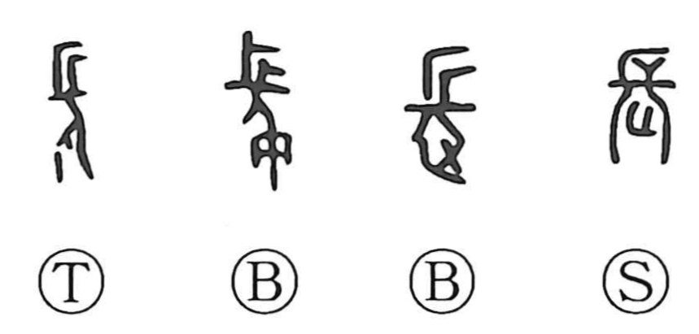

長

Kun: nagai, osa | On: cho
long ・ length ・ height ・ chief ・ leader
Explanation
長 pictures a person in profile with conspicuously long hair. The extended hair makes length visible, giving long, length, and height.
The long-haired figure is an elder, respected as a leader of the clan. From that person come chief, head, and the honour accorded to seniority. Length and leadership are joined through the same human image.
The wider word family includes flourishing or extending freely, and words for spreading and swelling. 長 consequently concerns growing as well as being long. Its leadership use survives in names for the head of a group, from an assembly to a company, while the elder remains the concrete figure behind that standing.